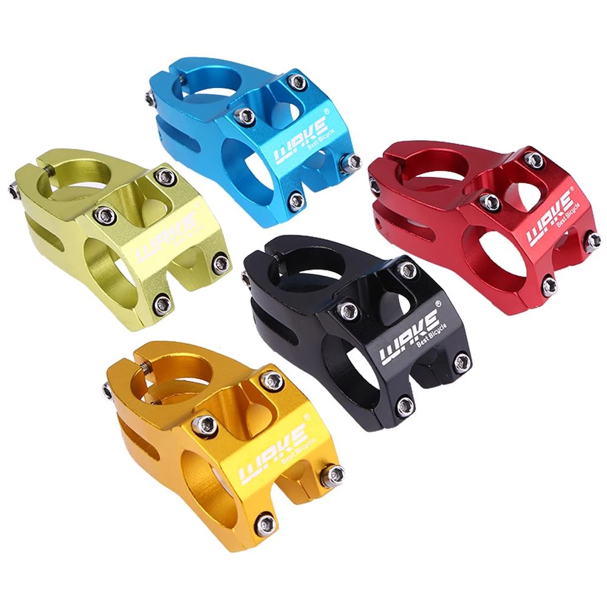
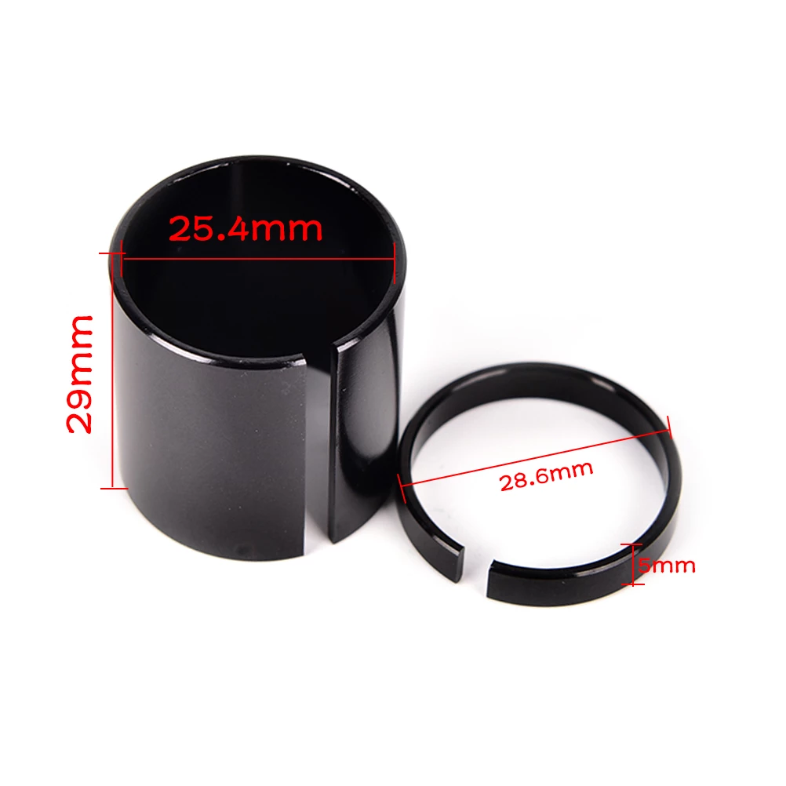
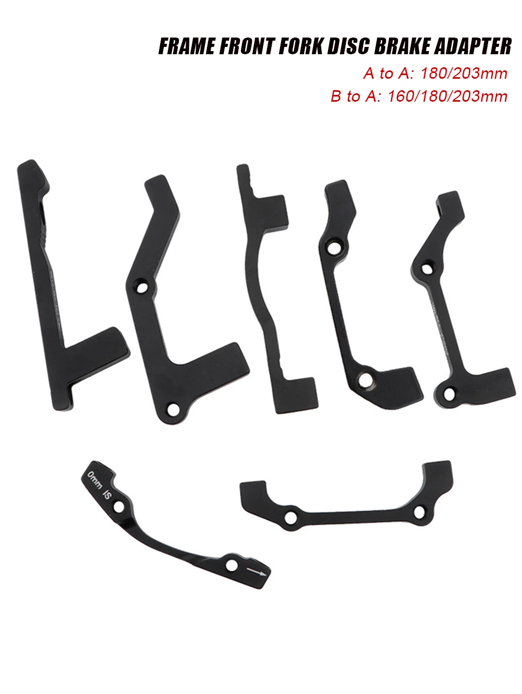
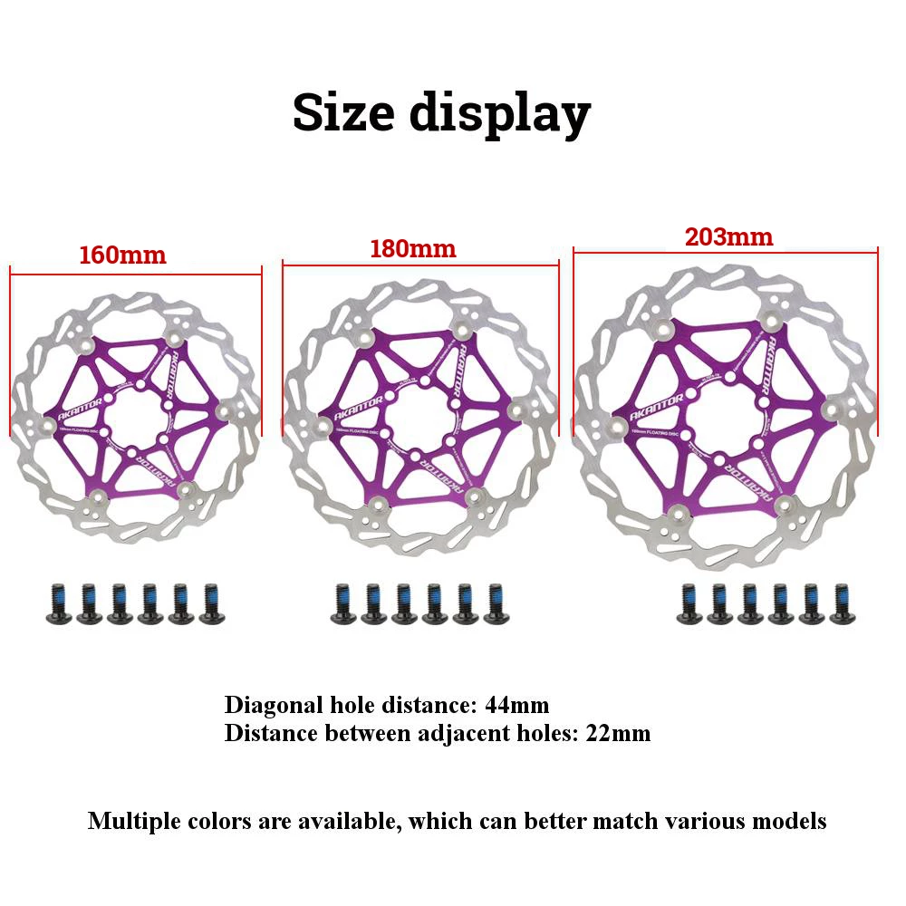
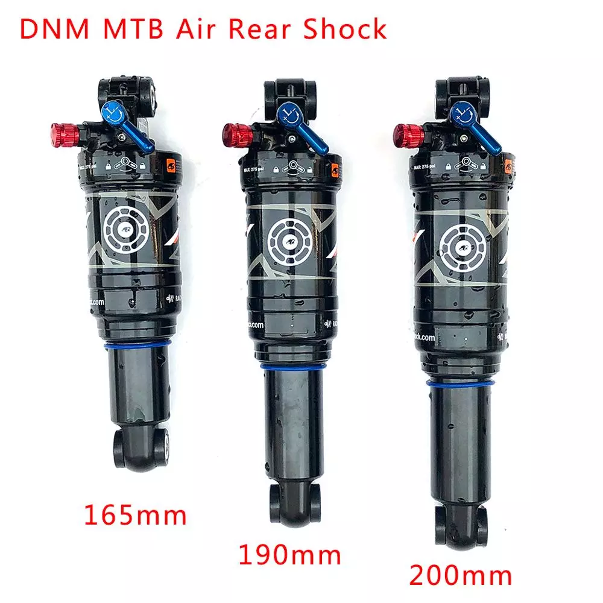
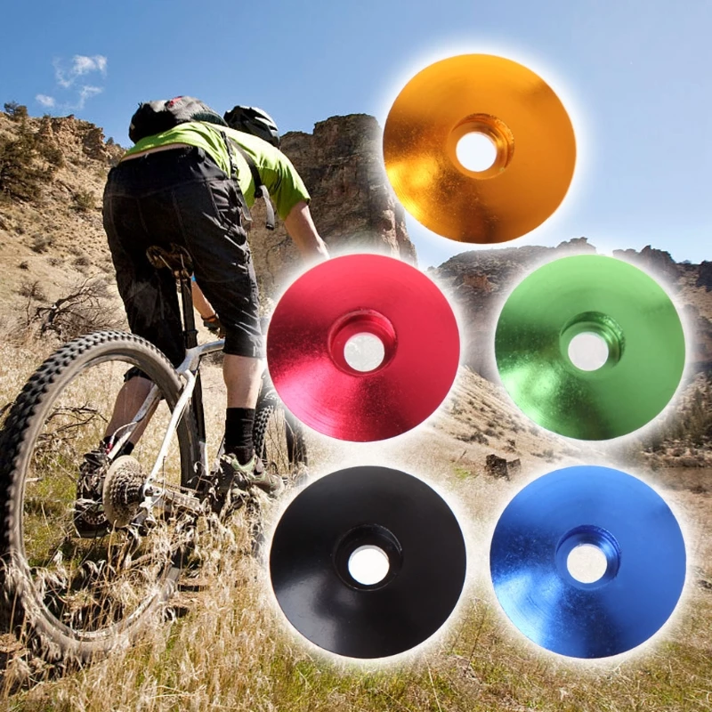
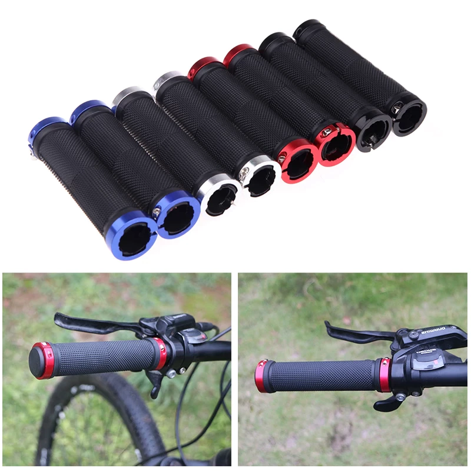
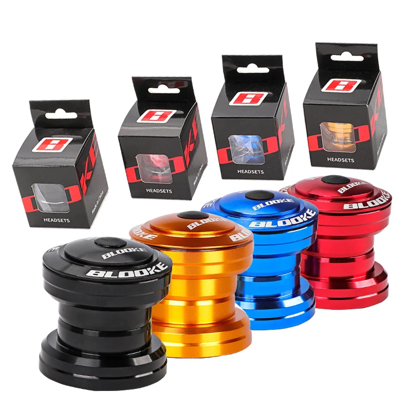
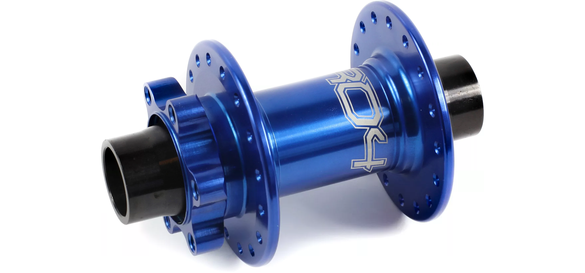

Aluminum Alloy Bike Stem MTB Road Bicycle Stem 25.4/31.8 mm 60/70mm Mountain MTB Bicycle Power Parts.
the smaller ones are the 1 inch clamp type you need 26 for old style build
the bigger ones you need at least 6
WAKE MTB Bike Handlebar Stem Wear-resistant Bicycle Stem 31.8MM Aluminum Alloy Outdoor Cycling Bicycle Handlebar Stems 5 Colors
wake/fmxtr zitto or other 31.9 stem need need 30 for old style
Cain: also you need 2 x 1 piece direct mount stems in 31.8 not 35!!!!
1Set Handlebar Stem Shim Bike Bicycle Stem Shim 25.4 to 28.6mm Bike Bicycle Ahead Stem Shim Reducer Conversion Variable Ring Set
every stem needs a shim
Cain: the 25.4 to 31.8s !!!!!!
MTB Bike Disc Brake Converter Ultralight Bracket IS PM AB To PM A Disc Brake Mount Adapter for 160 180 203mm Rotor
Cain: x3 b pillar 203 variant
1pcs Mountain Bike Brake Rotor 160mm/180mm/203mm Stainless Steel Rotor Strong Heat Dissipation Floating Rotor MTB Disc Brake Pad
Cain: pick your color x2 160 for front 1x 180 rear
DNM AO-38RC Mountain Bike Air Rear Shock With Lockout 165/190/200mm MTB Downhill Bicycle Coil Absorber
200mm variant 2 for front 2 for rear still uber cheap!
New Bicycle Headset Cap 28.6mm Dustproof Top MTB Bike Stem Cover Aluminum Alloy
minimum 8
Pair Anti-Skid Rubber Bicycle Grips Aluminum Alloy MTB BMX Bike Handle Bars End Grips Mountain Road Cycling Handlebar Grips
BLOOKE 1 1/8" 34MM MTB Bicycle Headset 2 Bearing Sealed Top Cap Cover Alloy Mountain Bike Parts For 28.6mm Threadless Fork Stem
Cain: bmx bars x1 i use box one 31.8
Hope Pro 4 MTB Front Hub Axle (20mm)
Cain: in stock!! blue black or silver 20mm thru axle in 36h!!
Other details
get the sapim strong spokes with your e stuff from grin will tell you what size when we know what rims your running
at grin would go for phaserunner l10 controller all axle 20mm thru variant hub motor and the cycle analyst and batt off choice with the cycle satiator charger! and thumb or twist throttle and tripwire for brakes